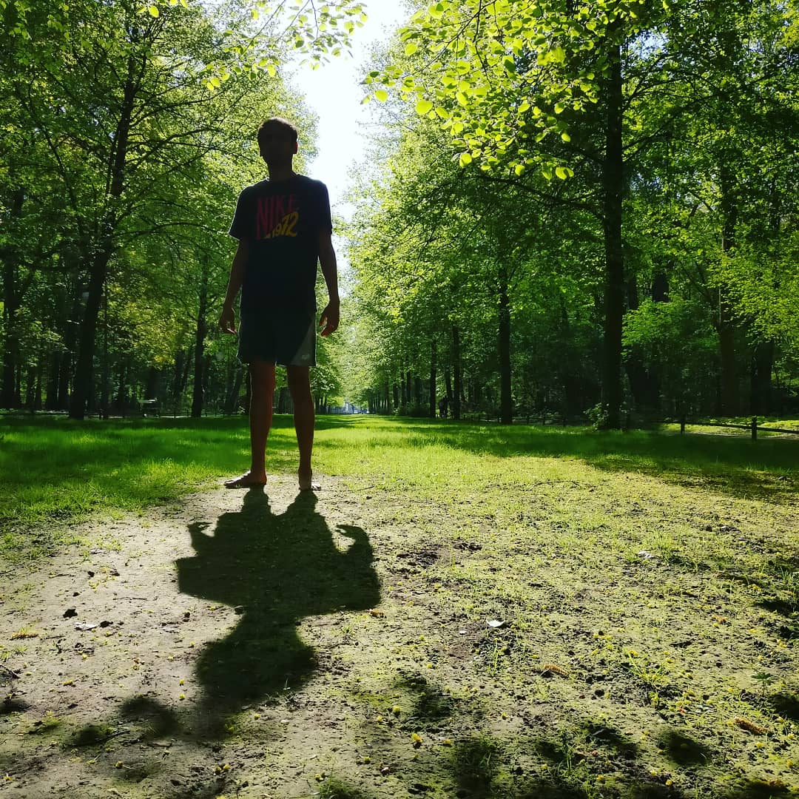

The last few updates
What I am doing now
Freelancing
I recently quit my job as a systems quality engineer and an SDET at Bitgrip to take the plunge into freelancing. Having worked in consulting and services for 10+ years now, this is a logical continuation. My focus is to help clients deliver high-quality software faster through continuous delivery. You can check out my professional site here.
Beyond Quality
Together with my friends Vitaly and Maryia, I started a collaborative research community focused on advancing software quality practices through open discussion and shared knowledge. We host a podcast where we talk about the research in the community, and also invite guests to weigh in.
LLMs under the hood
In my free time, I am understanding LLMs by testing them and learning about their inner workings. I gave a talk recently at the Berlin Quality Engineering Meetup on my initial findings. I am enrolled in the awesome Trey Grainger's online course, AI-Powered Search. November is a packed month!
Updated on 6 November, 2025.